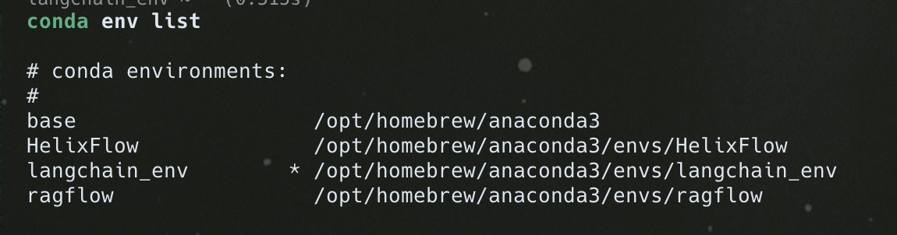
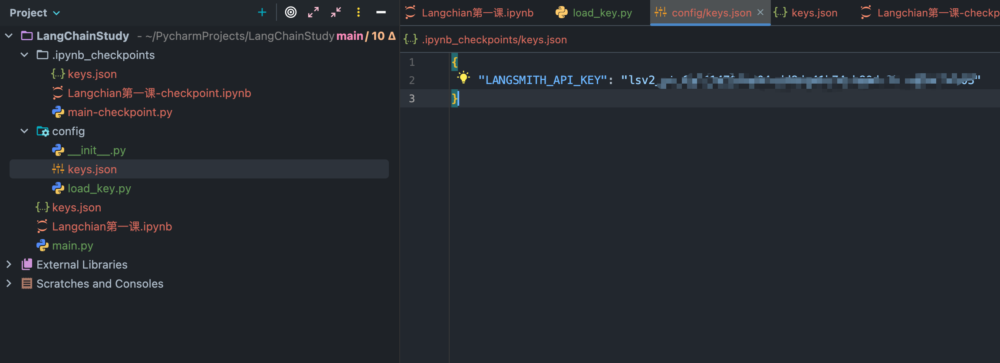
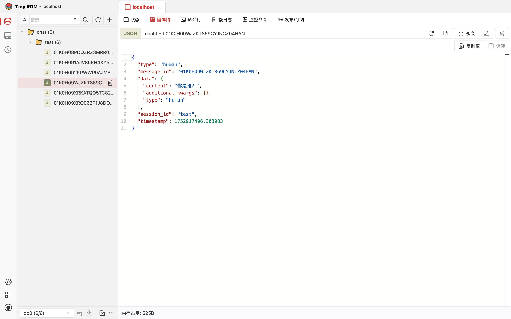
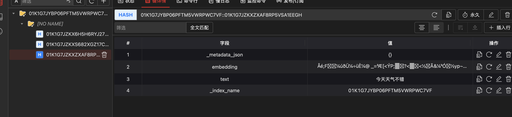

大模型学习
大模型Langchain学习
环境搭建
- 下载Conda环境，mac电脑通过brew install anaconda即可下载
brew install anaconda
# 下载后的路径为 /opt/homebrew/anaconda3/
conda init zsh
# 自动在~/.zshrc环境下创建anaconda环境变量- 创建一个需要的环境，环境之间是完全隔离的
conda create -n langchain_env python=3.10
# 创建名字为langchain_env的环境，创建环境时，选y会下载一些基本的依赖
conda active langchain_env
# 激活环境，可通过conda env list查看，当前环境会有✳️

conda list
# 通过这个命令查看都有哪些依赖
conda install xxx # 下载依赖
# 可以用pip install xxx，区别是conda会查看这个依赖所有环境依赖都安装，pip只安装这个包，不会检查别的依赖有无下载
conda update xxx # 更新依赖
conda remove xxx # 删除依赖
conda deactive # 退出环境- 在Pycharm新建项目。并选择刚刚创建的环境
- 在conda环境中，下载jupyter
conda env list
pip install jupyter
# 下载时间较长
pip install ipykernel
python -m ipykernel install --user --name=langchain_env --display-name="py310(langchain_env)"
jupyter notebook --port 8899
# 启动jupyter服务,预防端口冲突
LangChain第一站
学习langchain，需要先安装依赖(jupyter notebook)
!pip install langchain #核心安装包
!pip install langchain_community #社区扩展包
!pip install langchain_openai设置好langchain后，可以添加监控langchain_smith(非必选),如果需要跟踪各种大模型的调用过程，可以在环境变量中设置langchain_smith的apikey，设置了之后，未来就可以在Langchain_smith中看到各种大模型的调用记录
LangSmith的API_KEY需要去官网申请，个人用户免费 https://smith.langchain.com/
对于不同模型需要不同的API key进行管理，写入一个类来实现管理 load_key.python
import getpass
import json
import os
def load_key(key_name: str) -> object:
file_name = "keys.json"
if os.path.exists(file_name):
with open(file_name, "r") as file:
key = json.load(file)
if key_name in key and key[key_name]:
return key[key_name]
else:
key_val = getpass.getpass("Enter the key for {}: ".format(key_name)).strip()
key[key_name] = key_val
with open(file_name, "w") as file:
json.dump(key, file,indent=4)
return key_val
else:
key_val = getpass.getpass("Enter the key for {}: ".format(key_name)).strip()
key = {key_name: key_val}
with open(file_name, "w") as file:
json.dump(key, file, indent=4)
return key_val
if __name__ == "__main__":
print(load_key("LANGSMITH_API_KEY"))实现效果是可以自动创建json格式的api key

设置好后，可以直接调用模型写代码
import os
from config.load_key import load_key
if not os.environ.get("OPENAI_API_KEY"):
os.environ["OPENAI_API_KEY"] = load_key("OPENAI_API_KEY")
from langchain.chat_models import init_chat_model
model = init_chat_model("gpt-3.5-turbo-ca",model_provider="openai",base_url="https://api.chatanywhere.tech/v1")
from langchain_core.messages import SystemMessage,HumanMessage
message = [
SystemMessage("Translate the following text to Chinese"),
HumanMessage("hello how are you?")
]
model.invoke(message)# 生成结果
AIMessage(content='你好，你好吗？', additional_kwargs={'refusal': None}, response_metadata={'token_usage': {'completion_tokens': 8, 'prompt_tokens': 22, 'total_tokens': 30, 'completion_tokens_details': None, 'prompt_tokens_details': None}, 'model_name': 'gpt-3.5-turbo-0125', 'system_fingerprint': 'fp_0165350fbb', 'id': 'chatcmpl-BtbDj8V3TNhpiTvV1KEHCsqifHLXt', 'service_tier': None, 'finish_reason': 'stop', 'logprobs': None}, id='run--4dc3da18-abf1-4c62-b8b9-2fc1e7a6fd29-0', usage_metadata={'input_tokens': 22, 'output_tokens': 8, 'total_tokens': 30, 'input_token_details': {}, 'output_token_details': {}})与大模型交互，可以用不同的发送
- user:用户输入的问题
- system:描述问题的背景，或者描述大模型的角色
- assistant:模型输出的答案
model.invoke("Hello")
model.invoke([{"role":"user","content":"hello"}])
model.invoke([HumanMessage("Hello")])
针对于不同的大模型，也提供了更为快速便捷的方式
!pip install -U langchain_openai
if not os.environ.get("OPENAI_API_KEY"):
os.environ["OPENAI_API_KEY"] = load_key("OPENAI_API_KEY")
from langchain_openai import ChatOpenAI
llm = ChatOpenAI(
model = "gpt-3.5-turbo-ca",
base_url = "https://api.chatanywhere.tech/v1"
)
llm.invoke(
[
SystemMessage("Translate the following text to Chinese"),
HumanMessage("how to relax?")
]
)
DEEPSEEK同理，不做演示
# 调用其他模型的客户端
# 注意是langchain_community
from langchain_community.chat_models.baichuan import ChatBaichuan
baichuan = ChatBaichuan(
model="baichuan-7b-chat",
base_url="https://api.baichuan.ai/v1",
temperature=0.1
)
baichuan.invoke(HumanMessage("你好，世界！"))流式输出
from langchain_openai import ChatOpenAI
llm = ChatOpenAI(
model="gpt-3.5-turbo-ca",
base_url="https://api.chatanywhere.tech/v1",
streaming=True
)
stream = llm.stream([HumanMessage("你是谁？你能帮我解决什么问题？")])
for message in stream:
print(message.text(),end="\n")
我
是
一个
智
能
助
手
，
我
可以
帮
助
你
解
答
问题
、
提
供
信息
、
进行
任务
管理
和
日
程
安
排
等
。
如果
你
有
任
何
困
惑
或
需要
帮
助
，
尽
管
问
我
，
我
会
尽
力
帮
助
解
决
问题
。提示词
from langchain_core.prompts import ChatPromptTemplate
prompt = ChatPromptTemplate([
("system", "Translate the following text to {language}"),
("human", "{text}")
])
promotMessage = prompt.invoke({"language": "japanese", "text":"hello how are you?"})
promotMessage
# 打印效果
ChatPromptValue(messages=[SystemMessage(content='Translate the following text to japanese', additional_kwargs={}, response_metadata={}), HumanMessage(content='hello how are you?', additional_kwargs={}, response_metadata={})])
#调用大模型
from langchain_openai import ChatOpenAI
llm = ChatOpenAI(
model="gpt-3.5-turbo-ca",
base_url="https://api.chatanywhere.tech/v1"
)
response = llm.invoke(promotMessage)
print(response.text())
#打印效果
こんにちは、元気ですか？
参数列表
from langchain_openai import ChatOpenAI
chatOpenAI = ChatOpenAI(
model="gpt-4.1-nano",
base_url="https://api.chatanywhere.tech/v1",
temperature=1.7 # 温度参数 可查看源码
)
response = chatOpenAI.invoke([HumanMessage("给汽车起个酷炫的名字")])
for i in range(5):
print(str(i) + ">>" + response.text())
5. 夜 傲者
6. 狂飙幻影
7. 星空 getuark
8. 烈焰雷宾
9. 铁血 C.R.A V. E
10. sarturus Undertale
如果你喜欢某种风格或具体特点（比如速度感、科技感、豪华感等），告诉我还能帮你推荐更贴切的哦！
Langchain构建链式，达成机器人
## 构建LCEL链式，轻松构建大语言机器人
LCEL是LangChain生态中构建复杂AI链式调用的核心语言和机制，它以声明式方式和管道式语法，将复杂的多步AI处理流程高效、灵活、易于调试和部署地组合起来
import os
from langchain_core.output_parsers import StrOutputParser
from langchain_core.prompts import ChatPromptTemplate
from config.load_key import load_key
from langchain_openai import ChatOpenAI
if not os.environ.get("OPENAI_API_KEY"):
os.environ["OPENAI_API_KEY"] = load_key("OPENAI_API_KEY")
chatTemplate = ChatPromptTemplate.from_messages([
("system", "Translate the following text to {language}"),
("human", "{text}")
])
llm = ChatOpenAI(
model="gpt-3.5-turbo-ca",
base_url="https://api.chatanywhere.tech/v1",
max_retries=3,
max_tokens=100
)
statparse = StrOutputParser()
chain = chatTemplate | llm | statparse
# 构建链式
print(chain.invoke(
{
"language": "Chinese",
"text": "nice to meet you?"
}
))构建链式，能够将回答串联起来
chatTemplate = chatTemplate.from_messages({"如何回答这句话?{talk},请用五个字回答"})
chain2 = {"talk": chain} | chatTemplate | llm | statparse
chain2.invoke({"text": "nice to meet you",
"language": "Chinese"})组合链式
from langchain_core.runnables import RunnableMap, RunnableLambda
chatpromt_zh = ChatPromptTemplate.from_messages(["system", "Translate the following text from english to chinese", ("human", "{text}")])
chatpromt_ja = ChatPromptTemplate.from_messages(["system", "Translate the following text from english to japanese", ("human", "{text}")])
statparse = StrOutputParser()
chain_zh = chatpromt_zh | llm | statparse
chain_ja = chatpromt_ja | llm | statparse
parallel_chains = RunnableMap(
{
"zh": chain_zh,
"ja": chain_ja
}
)
final_chain = parallel_chains | RunnableLambda(lambda x: f"Chinese: {x['zh']}, Japanese: {x['ja']}")
print(final_chain.invoke({"text": "nice to meet you"}))通过langgraph打印链条的图形化处理
!pip install langgraph
!pip install grandalf
final_chain.get_graph().print_ascii()
+----------------------+
| Parallel<zh,ja>Input |
+----------------------+
*** ***
** **
** **
+--------------------+ +--------------------+
| ChatPromptTemplate | | ChatPromptTemplate |
+--------------------+ +--------------------+
* *
* *
* *
+------------+ +------------+
| ChatOpenAI | | ChatOpenAI |
+------------+ +------------+
* *
* *
* *
+-----------------+ +-----------------+
| StrOutputParser | | StrOutputParser |
+-----------------+ +-----------------+
*** ***
** **
** **
+-----------------------+
| Parallel<zh,ja>Output |
+-----------------------+
*
*
*
+--------+
| Lambda |
+--------+
*
*
*
+--------------+
| LambdaOutput |
+--------------+LangChain的链式语法功能非常强大，可以根据用户输入的问题，动态构建不同的链。
实际上，LangChain提供了一个顶级父类，Runnable。只要是Runnable的子类，就都可以链接成一个序列。
保存历史记录，通过查看历史记录继续消息
from langchain_core.chat_history import InMemoryChatMessageHistory
history = InMemoryChatMessageHistory()
history.add_user_message("你是谁？")
aiMessage = llm.invoke(history.messages)
print("第一次回答：" + aiMessage.content)
history.add_message(aiMessage)
history.add_message("再重复一次")
aiMessage2 = llm.invoke(history.messages)
print("第二次回答：" + aiMessage2.content)
由于是内存，所以重启会丢失，所以可以在Redis中存储 https://python.langchain.com/docs/integrations/memory/redis_chat_message_history/
由于是内存，重启会丢失数据，在其余的数据库中存储
在这之前需要先对redis服务器自行下载
docker run -d --name redis-stack -p 6379:6379 -p 8001:8001 redis/redis-stack:latest
!pip install langchain_redis redis
from langchain_redis import RedisChatMessageHistory
history = RedisChatMessageHistory(session_id="test",redis_url="redis://localhost:6379/0")
history.add_user_message("你是谁？")
aiMessage = llm.invoke(history.messages)
print("第一次回答：" + aiMessage.content)
history.add_message(aiMessage)
history.add_user_message("再重复一次")
aiMessage2 = llm.invoke(history.messages)
print("第二次回答" + aiMessage2.content)

整合LCEL表达式
llm = ChatOpenAI(
model="gpt-3.5-turbo-ca",
base_url="https://api.chatanywhere.tech/v1",
max_retries=3,
max_tokens=100
)
from langchain_core.runnables import RunnableWithMessageHistory
RunnableWithMessageHistory = RunnableWithMessageHistory(
llm,
get_session_history=lambda :history # 使用RedisChatMessageHistory
)
print(RunnableWithMessageHistory.invoke({"text":"请再重复一次"}))
from langchain_core.runnables import RunnableWithMessageHistory
prompt = ChatPromptTemplate.from_messages([
("user", "{text}")
])
# 2. 创建llm实例
llm = ChatOpenAI(
model="gpt-3.5-turbo-ca",
base_url="https://api.chatanywhere.tech/v1",
max_retries=3,
max_tokens=100
)
# 3. 实例化输出解析器
statparse = StrOutputParser()
# 4. 构造链
chain = prompt | llm | statparse
# 5. 初始化消息历史（假设history是已初始化的RedisChatMessageHistory）
history.clear()
# 6. 实例化RunnableWithMessageHistory
runnable_with_history = RunnableWithMessageHistory(
chain,
get_session_history=lambda: history
)
# 7. 调用
response = runnable_with_history.invoke({"text": "你是谁？"})
response = runnable_with_history.invoke({"text": "请再重复一次"})
调用外部工具，实现大模型的扩展能力，要查看有哪些大模型支持function_call
from Langchian第一课 import message
from config.load_key import load_key
from langchain_openai import ChatOpenAI
llm = ChatOpenAI(
model="gpt-3.5-turbo-ca",
base_url="https://api.chatanywhere.tech/v1",
max_retries=3,
max_tokens=100,
api_key=load_key("OPENAI_API_KEY")
)
print(llm.invoke("今天是几月几号？").content)
今天是2022年10月13日。
from langchain_core.tools import tool
@tool # 使用 `@tool` 装饰器，将此函数包装成 LangChain 识别的工具接口。
def get_current_date():
"""获取当前日期"""
from datetime import datetime
return datetime.now().strftime("%Y-%m-%d")
# 将之前定义的工具 `get_current_date` 绑定到语言模型（`llm`）上，得到一个支持调用此工具的模型实例 `llm_tools`。
llm_tools = llm.bind_tools([get_current_date])
all_tools = {"get_current_date": get_current_date}
query = "今天是几月几号？"
message = [query]
# 初始化消息列表，首条为用户提问。
ai_messages = llm_tools.invoke(message)
# 调用绑定了工具的语言模型，传入消息列表，模型会尝试处理请求，并视情况调用工具。
# 返回的 `ai_messages` 是模型对话响应，可能包含对工具的调用信息。
message.append(ai_messages)
# 将模型的回复添加到消息列表中，更新会话上下文。
if ai_messages.tool_calls:
for tool_call in ai_messages.tool_calls:
selected_tool = all_tools[tool_call["name"].lower()]
tool_msg = selected_tool.invoke(tool_call)
message.append(tool_msg)
# 检测模型回复中是否包含工具调用请求（`tool_calls`）。
# 如果有，遍历每个工具调用：
# 根据工具调用里指定的工具名，从 `all_tools` 拿到对应的工具函数。
# 调用工具函数的 `invoke` 方法，传入工具调用参数，执行工具逻辑（这里是获取当前日期）。
# 将工具返回结果作为消息添加到会话上下文。
llm_tools.invoke(message).content
# 再次调用绑定了工具的语言模型，传入最新的消息列表（包括用户问题、模型回复、工具执行结果）。
# 返回语言模型对话的最终文本内容，即模型依据工具结果给出的回复。
'今天是2025年7月21日。'
from langchain_core.tools import tool
@tool(description="获取某个城市的天气")
def get_city_weather(city: str) -> str:
"""获取指定城市的天气
Args:
city :具体名称
"""
return "{}的天气是晴天，温度25度。".format(city)
llm_tools = llm.bind_tools([get_city_weather])
all_tools = {"get_city_weather": get_city_weather}
query = "北京的天气怎么样？"
message = [query]
ai_messages = llm_tools.invoke(message)
message.append(ai_messages)
print(ai_messages.tool_calls)
if ai_messages.tool_calls:
for tool_call in ai_messages.tool_calls:
selected_tool = all_tools[tool_call["name"].lower()]
tool_msg = selected_tool.invoke(tool_call)
message.append(tool_msg)
llm_tools.invoke(message).content
[{'name': 'get_city_weather', 'args': {'city': 'Beijing'}, 'id': 'call_BSkAspDYQ2txdZWphlHyydX1', 'type': 'tool_call'}]
'北京的天气是晴天，温度25度。'
from langchain_core.tools import StructuredTool
def get_bad_weather(city: str) -> str:
"""获取指定城市的坏天气
Args:
city :具体名称
"""
return "{}的天气是雨天，温度15度。".format(city)
# 注意另外一种用法
weather_tool = StructuredTool.from_function(
func=get_bad_weather,
name="get_bad_weather",
description="获取某个城市的坏天气"
)
all_tools = {"get_bad_weather": weather_tool}
llm_tools = llm.bind_tools([weather_tool])
query = "上海的天气怎么样？"
message = [query]
ai_messages = llm_tools.invoke(message)
message.append(ai_messages)
if ai_messages.tool_calls:
for tool_call in ai_messages.tool_calls:
selected_tool = all_tools[tool_call['name'].lower()]
tool_msg = selected_tool.invoke(tool_call)
message.append(tool_msg)
llm_tools.invoke(message).content
'上海目前是雨天，温度为15度。请注意保持干燥和保暖。如果需要更多信息，请告诉我。'
通过调用彩云天气实现
import requests
def get_weather(city):
url = "https://p76hewqrff.re.qweatherapi.com/v7/weather/now"
params = {
'location': city,
'key': '14f02ca34b524815b6080f028d8689e2'
}
response = requests.get(url,params=params)
if response.status_code == 200:
data = response.json()
if data['code'] == str(200):
weather = data['now']
print(f"城市：{city}")
print(f"天气：{weather['text']}")
print(f"温度：{weather['temp']}°C")
print(f"风速：{weather['windSpeed']} km/h")
print(f"体感温度：{weather['feelsLike']} °C")
else:
print(f"错误代码：{data['code']}")
else:
print(f"请求失败，状态码：{response.status_code}")
if __name__ == "__main__":
city = input("请输入城市名称：")
get_weather(city)
from langgraph.prebuilt import create_react_agent
from langchain_core.tools import tool
from GetWeatherDemo import get_weather
llm = ChatOpenAI(
model="gpt-4o-mini-ca",
base_url="https://api.chatanywhere.tech/v1",
max_retries=3,
max_tokens=100,
api_key=load_key("OPENAI_API_KEY")
)
@tool(description="获取某个城市代码的天气")
def get_city_weather(city: str) -> str:
"""获取指定城市代码的天气信息"""
try:
# 捕获 print 输出
f = io.StringIO()
with redirect_stdout(f):
result = get_weather(city)
output = f.getvalue().strip()
if output:
return output
elif result is not None:
return str(result)
else:
return f"成功获取城市代码 {city} 的天气信息，但无返回内容"
except Exception as e:
return f"获取天气信息失败: {str(e)}"
# 创建代理
agent = create_react_agent(llm, [get_city_weather])
query = "城市代码为101120101的天气怎么样？"
result = agent.invoke({"messages": [("user", query)]})
print("模型最终回答：")
print(result["messages"][-1].content)
大模型作为工具
from langchain_core.prompts.chat import ChatPromptTemplate
from langchain_core.output_parsers import StrOutputParser
from langchain_openai import ChatOpenAI
from config.load_key import load_key
ChatPromptTemplate = ChatPromptTemplate.from_messages([("human", "请用以下语言回答问题 {language}")])
llm = ChatOpenAI(
model="gpt-3.5-turbo-16k",
base_url="https://api.chatanywhere.tech/v1",
max_retries=3,
max_tokens=100,
api_key=load_key("OPENAI_API_KEY")
)
outParse = StrOutputParser()
chain = ChatPromptTemplate | llm | outParse
as_tool = chain.as_tool(name="translater assistant",description="翻译任务")
all_tools ={"translater assistant": as_tool}
llm_tools = llm.bind_tools([as_tool])
query = "请将以下内容翻译成英文：今天天气很好。"
messages = [query]
ai_response = llm_tools.invoke(messages)
messages.append(ai_response)
print(ai_response.tool_calls)
print(ai_response.content)
if ai_response.tool_calls:
for tool_call in ai_response.tool_calls:
selected_tool = all_tools[tool_call["name"].lower()]
tool_msg = selected_tool.invoke(tool_call)
messages.append(tool_msg)
llm_tools.invoke(messages).content使用langchain自己的工具（MCP）
https://python.langchain.com/docs/integrations/tools/
使用AGENT简化大模型工具代码
from langchain_core.tools import tool
from langchain.agents import initialize_agent, AgentType
@tool(description="获取某个城市的天气")
def get_city_weather(city: str) -> str:
"""获取指定城市的天气"""
return "{}的天气是晴天，温度25度。".format(city)
agent = initialize_agent(
tools=[get_city_weather],
llm=llm,
agent_type=AgentType.OPENAI_FUNCTIONS,
verbose=True
)
query = "北京的天气怎么样？"
result = agent.invoke(query)
print("模型最终回答：")
print(result)
Action: get_city_weather
Action Input: "北京"
Observation: 北京的天气是晴天，温度25度。
> Entering new AgentExecutor chain...
I need to use the get_city_weather function to get the weather in Beijing.
Action: get_city_weather
Action Input: "北京"
Observation: 北京的天气是晴天，温度25度。
Thought:I have the information on the weather in Beijing.
Final Answer: 北京的天气是晴天，温度25度。
> Finished chain.
模型最终回答：
{'input': '北京的天气怎么样？', 'output': '北京的天气是晴天，温度25度。'}
Embedding向量化模型，实现语意相似
import os
from config.load_key import load_key
from langchain_openai import OpenAIEmbeddings
# Load the OpenAI API key
if not os.environ.get("OPENAI_API_KEY"):
os.environ["OPENAI_API_KEY"] = load_key("OPENAI_API_KEY")
# Initialize the OpenAI embeddings
embeddings = OpenAIEmbeddings(
model="text-embedding-3-small",
base_url="https://api.chatanywhere.tech/v1"
)
query = "今天天气怎么样？"
query_result = embeddings.embed_query(query)
print(query_result)
print(len(query_result))[0.003125559538602829, -0.025495871901512146, -0.02925693802535534, 0.008977419696748257, 0.057682283222675323, 0.01445837039500475, 0.0012934571132063866, -0.012540037743747234, -0.016414502635598183, -0.006180244497954845, -0.03812095895409584, 0.03475678712129593, -0.06622500717639923, -0.025760468095541, -0.040105439722537994, -0.005523475352674723, -0.011141450144350529, 0.052239131182432175, -0.011519446969032288, 0.038782451301813126, -0.0332070030272007, -0.03715706616640091, -0.0008386799599975348, 0.02220730111002922, -0.02502337470650673, 0.027744950726628304, 0.010007460601627827, 0.005017905030399561, 0.02874664217233658, -0.0377996601164341, -0.005679399240761995, -0.02725355513393879, 0.014174873009324074, -0.006539341527968645, 0.05239032953977585, -0.00409181322902441, -0.008712821640074253, 0.0034586689434945583, -0.00490923086181283, 0.00990351103246212, -0.011292648501694202, 0.0053864517249166965, 0.015252163633704185, -0.0073473090305924416, -0.004384760744869709, -0.05862727388739586, 0.019504625350236893, 0.03840445727109909, -0.0023931909818202257, -0.022585297003388405, -0.0028751366771757603, -0.017756391316652298, 0.010612254962325096, 0.010943002067506313, -0.011037500575184822, -0.0034066943917423487, 0.003418506821617484, 0.034322090446949005, 0.06690540164709091, -0.013248780742287636, -0.031392619013786316, -0.02770715206861496, -0.02508007548749447, 0.04105043038725853, -0.005188003648072481, -0.04040783643722534, 0.027574852108955383, 0.015516760759055614, -0.02284989506006241, 0.014675718732178211, 0.0038532030303031206, 0.011925793252885342, 0.031184719875454903, -0.028860041871666908, -0.0029341985937207937, 0.02553367055952549, -0.0032058837823569775, -0.048912759870290756, 0.035512782633304596, -0.012577837333083153, -0.00392171461135149, -0.006043220870196819, -0.024872176349163055, 0.058022480458021164, -0.01781309023499489, -0.06165124848484993, 0.03039092756807804, 0.025439171120524406, 0.023397989571094513, 0.01334328018128872, 0.017539042979478836, 0.011991942301392555, -0.016452303156256676, 0.0008050146279856563, -0.0022856981959193945, 0.020128319039940834, -0.03600417822599411, 0.03485128656029701, -0.0008918357780203223, 0.017831990495324135, 0.025949466973543167, -0.04229782149195671, 0.010905202478170395, 0.05084054544568062, -0.02048741653561592, 0.0015675047179684043, -0.04494379833340645, -0.02668656036257744, -0.019542424008250237, -0.03281010687351227, -0.07586392015218735, 0.011302098631858826, -0.039009250700473785, 0.04717397689819336, -0.014108723029494286, 0.04286481440067291, 0.042562417685985565, -0.014174873009324074, -0.04494379833340645, -0.0372137650847435, 0.020449616014957428, -0.0080182533711195, 0.025344673544168472, 0.018644683063030243, -0.0663762018084526, 0.015412812121212482, -0.001665547606535256, -0.022188400849699974, -0.026799960061907768, 0.03229980915784836, 0.01952352561056614, -0.002074256306514144, -0.018238335847854614, 0.011311548762023449, 0.003529543289914727, -0.05594349652528763, 0.007044911850243807, 0.03577737882733345, -0.01563015952706337, -0.03865015506744385, 0.08693922311067581, 0.01935342699289322, 0.02237739972770214, -0.013570078648626804, 0.027177955955266953, -0.014467820525169373, 0.008282850496470928, 0.013692927546799183, -0.026119565591216087, -0.014647368341684341, 0.012927483767271042, 0.018956530839204788, -0.032016314566135406, 0.014930865727365017, 0.0349079854786396, -0.014571769163012505, 0.0686819851398468, -0.018398985266685486, 0.0045099719427526, -0.01351337879896164, -0.01643340289592743, 0.027404753491282463, -0.03636327385902405, -0.05072714388370514, -0.004654083400964737, 0.014184323139488697, 0.029238037765026093, -0.008079677820205688, 0.010999700985848904, -0.030939022079110146, 0.006166069768369198, -0.009459365159273148, 0.03991644084453583, 0.03343379870057106, -0.02472097799181938, 0.007517407648265362, 0.04641798511147499, -0.032318711280822754, -0.002354210242629051, 0.04789217188954353, -0.025609269738197327, 0.011217049323022366, 0.004618646111339331, -0.001954951323568821, -0.02655426226556301, 0.043242812156677246, -0.005887296982109547, 0.04071023315191269, -0.019107729196548462, 0.01273848582059145, -0.04721177741885185, 0.018181636929512024, 0.022755395621061325, 0.015564010478556156, -0.03326370194554329, -0.058816272765398026, 0.03819655627012253, 0.01433552149683237, -0.0020423629321157932, 0.034926887601614, -0.012247090227901936, 0.00904829427599907, 0.019712522625923157, -0.010602804832160473, 0.0037020042072981596, -0.003510643495246768, 0.03507808595895767, 0.05019795149564743, -0.024683179333806038, 0.005745548289269209, 0.06962697207927704, 0.02095991186797619, -0.03224311023950577, -0.019958220422267914, -0.012039192020893097, 0.017595741897821426, -0.009525514207780361, -0.006596040911972523, -0.04343181103467941, -0.006355068180710077, -0.022056102752685547, 0.014496169984340668, -0.00026858432102017105, -0.0021900178398936987, -0.0641082227230072, -0.015762459486722946, -0.023284591734409332, 0.009950760751962662, 0.023038893938064575, -0.003262583166360855, 7.655908120796084e-05, 0.007432358339428902, -0.014392221346497536, -0.003425594186410308, -0.029672734439373016, -0.011604496277868748, 0.021281208842992783, -0.03785635903477669, 0.024985576048493385, -0.006539341527968645, -0.01445837039500475, 0.05533870309591293, -0.02638416364789009, -0.0038295781705528498, 0.025779368355870247, -0.004743857309222221, -0.00959166418761015, -0.045586392283439636, -0.003983139060437679, -0.001239120145328343, 0.08194966614246368, -0.008008803240954876, -0.030901223421096802, -0.08157166838645935, 0.0028231621254235506, -0.02273649536073208, -0.013116482645273209, 0.03657117113471031, 0.00976176280528307, -0.044905997812747955, -0.027007857337594032, -0.028519844636321068, -0.058816272765398026, -0.051520936191082, -0.02542027272284031, -0.04305381327867508, -0.00125920120626688, -0.03286680579185486, -0.03441658988595009, -0.037629563361406326, 0.016518451273441315, -0.050462547689676285, -0.0012485700426623225, -0.007829254493117332, 0.03961404412984848, -0.03452999144792557, 0.0021262308582663536, -0.003926439676433802, 0.018956530839204788, -0.009199492633342743, -0.003690192010253668, -0.013957524672150612, 0.03487018868327141, -0.03366059809923172, -0.0007140592206269503, -0.024475280195474625, 0.003983139060437679, -0.02708345651626587, 0.02330349013209343, -0.017208294942975044, -0.010479955933988094, 0.029578235000371933, -0.016698000952601433, 0.004913955926895142, -0.041768625378608704, 0.01136824768036604, 0.03061772510409355, 0.02993733063340187, -0.010640604421496391, -0.002155761932954192, 0.037705160677433014, -0.027612652629613876, -0.041541825979948044, 0.013399980030953884, 0.07416293770074844, 0.06509101390838623, 0.05261712893843651, 0.009799562394618988, -0.04184422641992569, 0.001100324559956789, -0.032885704189538956, 0.010772903449833393, -0.016981497406959534, -0.039992041885852814, 0.03141151741147041, -0.01636725291609764, 0.02065751515328884, -0.013088132254779339, 0.03868795186281204, -0.018635232001543045, -0.01393862534314394, -0.015478961169719696, -0.018691932782530785, 0.00495175551623106, -0.03853675350546837, 0.015450611710548401, 0.00981846172362566, -0.003742166329175234, -0.018351735547184944, -0.053335320204496384, -0.03846115618944168, -0.04758977144956589, 0.020752014592289925, 0.01385357603430748, 0.018814781680703163, -0.0246264785528183, 0.00688426336273551, -0.013560628518462181, 0.0006000696448609233, 0.05099174380302429, -0.00034315005177631974, -0.028708841651678085, -0.019022678956389427, -0.0022160052321851254, -0.03343379870057106, -0.07764050364494324, 0.032262012362480164, -0.010366557165980339, -0.00958693865686655, 0.01399532426148653, 0.01980702206492424, 0.016792498528957367, 0.019192777574062347, -0.011784044094383717, -0.015998706221580505, 0.05182333663105965, 0.03594747930765152, -0.0036264050286263227, -0.0007317778072319925, -0.010725653730332851, 0.02787725068628788, -0.008528548292815685, 0.026289664208889008, -0.019136078655719757, 0.05930766835808754, 0.03995424136519432, -0.053335320204496384, 0.007257535122334957, -0.06656520068645477, -0.0076591563411056995, -0.03800755739212036, 0.04059683531522751, -0.03725156560540199, -1.312283166043926e-05, 0.008136376738548279, 0.01494031585752964, 0.040899232029914856, 0.0012284889817237854, 0.02903014048933983, 0.031128020957112312, -0.020468516275286674, 0.0025065899826586246, -0.01124539878219366, 0.011264299042522907, 0.02215060219168663, 0.03594747930765152, -0.01952352561056614, -0.019249476492404938, 0.07779170572757721, -0.03619317710399628, 0.041768625378608704, -0.05473390966653824, -0.0168775487691164, -0.015006465837359428, -0.011113100685179234, 0.002473515225574374, 0.01986372098326683, 0.06308763474225998, -0.056812889873981476, -0.027726050466299057, -0.00959166418761015, -0.015885308384895325, -0.012095891870558262, -0.02432408183813095, 0.03931164741516113, 0.024229582399129868, -0.028689943253993988, 0.004932855721563101, -0.02048741653561592, -0.07518352568149567, -0.013948074541985989, -0.03313140198588371, 0.014949765987694263, 0.05465830862522125, -0.06943798065185547, -0.01884313113987446, -0.021904904395341873, -0.005098229274153709, 0.0016797224525362253, -0.009440464898943901, -0.05140753835439682, 0.017586292698979378, 0.040785834193229675, -0.003935889806598425, -0.009553864598274231, -0.01986372098326683, -0.036779068410396576, -0.021167811006307602, 0.06766138970851898, -0.0028727741446346045, 0.005173828452825546, -0.027234654873609543, -0.023889385163784027, 0.025325773283839226, 0.05556550249457359, 0.010905202478170395, -0.04037003964185715, 0.036495573818683624, 0.030579926446080208, 0.03135481849312782, 0.0400676392018795, 0.0024853276554495096, -0.0049801054410636425, -0.03681686893105507, -0.0010235439985990524, -0.020770912989974022, 0.03885805234313011, 0.005329752340912819, -0.023227890953421593, 1.3958004956293735e-06, -0.02082761377096176, 0.019996020942926407, -0.009454640559852123, 0.011217049323022366, -0.028595443814992905, 0.05341092124581337, 0.00755520723760128, 0.014817466959357262, -0.020014921203255653, -0.007323684170842171, -0.024342982098460197, -0.06558240950107574, 0.005485675763338804, -0.013796876184642315, -0.023549187928438187, -0.008665571920573711, 0.04675818234682083, -0.02370038814842701, -0.007205560337752104, -0.019939322024583817, -0.03158161789178848, 0.041352830827236176, 0.033584997057914734, 0.010290957987308502, 0.0018368272576481104, 0.007536307442933321, -0.011150900274515152, -0.012596736662089825, -0.0054384260438382626, 0.008405699394643307, 0.05004674941301346, 0.014524519443511963, 0.010961901396512985, -0.003694916842505336, -0.03337709978222847, 0.05299512296915054, -0.01101860124617815, 0.04014324024319649, 0.01124539878219366, 0.014307172037661076, -0.0034114194568246603, 0.032148610800504684, 0.02878444269299507, -0.0021982865873724222, 0.04838356748223305, 0.0383666567504406, -0.05926986783742905, 0.017794189974665642, 0.02793394960463047, -0.0024191783741116524, -0.030353127047419548, 0.011736794374883175, 0.01614045538008213, -0.017841439694166183, 0.04169302433729172, -0.03919824957847595, 0.06085745245218277, -0.014118173159658909, 0.030674424022436142, -0.012464438565075397, 0.004349323455244303, 0.017548492178320885, -0.009293992072343826, -0.014741867780685425, -0.015658508986234665, 0.0028231621254235506, 0.026648761704564095, 0.04059683531522751, -0.02409728430211544, 0.0024156346917152405, -0.008745896629989147, -0.010650054551661015, 0.0075646573677659035, 0.020241718739271164, -0.003638217458501458, -0.0005271281115710735, 0.00912861805409193, -0.03141151741147041, -0.05499850586056709, -0.017151596024632454, 0.007266984786838293, -0.01592310704290867, 0.003220058511942625, 0.025892768055200577, 0.010177558287978172, 0.007356759160757065, -0.004401298239827156, -0.0035224559251219034, 0.010026359930634499, -0.02948373556137085, 0.022793196141719818, -0.0035673431120812893, -0.008377349935472012, 0.008736446499824524, 0.00026444997638463974, 0.01609320566058159, -0.05016015097498894, 0.02988063171505928, -0.009799562394618988, 0.002749925246462226, 0.02559037134051323, 0.010083059780299664, -0.010697304271161556, 0.01871083304286003, -0.0063314433209598064, 0.01479856763035059, -0.002271523466333747, -0.017831990495324135, -0.0009993285639211535, 0.012974733486771584, 0.007163035683333874, -0.03403859585523605, -0.03870685398578644, 0.016045955941081047, 0.014203222468495369, -0.0010318126296624541, -0.004984830506145954, -0.015214363113045692, 0.018569083884358406, 0.028860041871666908, -0.002387284766882658, 0.019882621243596077, -0.002298691775649786, 0.025495871901512146, -0.017312245443463326, 0.016679100692272186, 0.09207997471094131, -0.030523225665092468, -0.04029443860054016, -0.007446533069014549, 0.0010625248542055488, -0.038895852863788605, 0.024645378813147545, 0.003616955131292343, -0.02271759696304798, 0.02095991186797619, 0.004023301415145397, -0.011784044094383717, -0.005254152696579695, 0.018077688291668892, 0.02426738291978836, 0.02313339337706566, 0.0004763347969856113, 0.032205309718847275, -0.0206008143723011, -0.01820053718984127, -0.02971053309738636, -0.029181338846683502, -0.00610937038436532, 0.027442554011940956, -0.0018202898791059852, -0.037629563361406326, -0.05182333663105965, 0.0074559831991791725, 0.006699990015476942, -0.0180398877710104, 0.005882572382688522, 0.03407639265060425, -0.04974435269832611, -0.03987864404916763, -0.024418581277132034, -0.0123037900775671, 0.004646996036171913, 0.0014292997075244784, 0.029389236122369766, 0.030882323160767555, -0.005169103853404522, 0.007281159516423941, 0.010432706214487553, 0.0266109611839056, -0.01975032314658165, -0.007404008414596319, -0.013040883466601372, 0.023624788969755173, 0.03309360146522522, -0.04165522754192352, -0.00858524814248085, -0.04086143523454666, 0.0343598909676075, -0.03080672398209572, -0.024853277951478958, 0.0372137650847435, -0.013777976855635643, 0.0220372024923563, -0.005372276995331049, 0.005102954339236021, 0.01631055399775505, -0.034265391528606415, 0.026818860322237015, -0.04271361604332924, 0.04619118571281433, 0.010253158397972584, 0.025098975747823715, -0.03464338928461075, 0.024078384041786194, -0.04377200827002525, -0.032205309718847275, -0.009303441271185875, -0.010054709389805794, 0.022698696702718735, 0.010338207706809044, -0.01156669668853283, -0.03747836500406265, 0.017661891877651215, -0.030674424022436142, -0.0012887321645393968, 0.029105739668011665, 0.04721177741885185, -0.05700188875198364, -0.007026012055575848, 0.008660847321152687, -0.017302794381976128, -0.026629861444234848, 0.027272455394268036, -0.0013867750531062484, 0.03313140198588371, -0.003914627246558666, -0.01659405045211315, -0.0383477546274662, 0.019731422886252403, 0.046795979142189026, 0.015119864605367184, 0.01042325608432293, 0.021621406078338623, 0.06577140837907791, -0.0034941062331199646, 0.046002186834812164, -0.03496468812227249, -0.0016809037188068032, 0.011784044094383717, -0.004285536706447601, 0.025628169998526573, -0.014127623289823532, 0.001958495005965233, -0.0033830697648227215, 0.027726050466299057, 0.00833010021597147, 0.0008126926841214299, -0.0015450611244887114, -0.01196359284222126, -0.0029814483132213354, 0.05220133066177368, 0.018625782802700996, 0.0209032129496336, 0.010801252909004688, 0.0020364567171782255, -0.02313339337706566, 0.013399980030953884, 0.025684868916869164, 0.03245100751519203, 0.010914651677012444, -0.0007624900317750871, -0.004328061360865831, -0.016187705099582672, 0.01958022452890873, -0.020071620121598244, -0.006520441733300686, -0.004068188369274139, 0.027688251808285713, -0.02095991186797619, -0.00602432107552886, -0.030296428129076958, 0.0016053043073043227, -0.0755993202328682, -0.003666567150503397, 0.017964288592338562, 0.0008085583685897291, 0.027272455394268036, 0.0014966303715482354, -0.034775689244270325, -0.015715209767222404, 0.007635531481355429, -0.03468118980526924, -0.018247786909341812, -0.02364368736743927, -0.015951456502079964, -0.040672436356544495, -0.012596736662089825, -0.012672336772084236, -0.019655823707580566, 0.019136078655719757, -0.0008410424343310297, 0.016131006181240082, 0.028293047100305557, -0.004890331067144871, -0.010461056604981422, -0.002386103617027402, 0.017765840515494347, 0.021715905517339706, -0.03908484801650047, -0.022301800549030304, 0.036212075501680374, -0.01170844491571188, 0.025798268616199493, 0.00459502125158906, 0.023568088188767433, 0.04551079124212265, -0.001057799905538559, -0.0389336496591568, -0.017047647386789322, 0.008679747581481934, 0.0012214015005156398, -0.006463741883635521, -0.02095991186797619, 0.0025136773474514484, 0.018521834164857864, 0.007380384020507336, -0.010479955933988094, -0.016338903456926346, 0.011217049323022366, -0.014354420825839043, 0.007026012055575848, -0.0006927968934178352, -0.007479608058929443, -0.026176264509558678, -0.015942007303237915, -0.020222818478941917, 0.007574107032269239, -0.024172883480787277, 0.004311523865908384, 0.01636725291609764, -0.008358449675142765, 0.01592310704290867, 0.007919029332697392, -0.006402317434549332, 0.007087436504662037, -0.003709091804921627, 0.014845816418528557, -0.010290957987308502, 0.01128319837152958, 0.014921416528522968, -0.012785735540091991, -0.010442156344652176, 0.039009250700473785, -0.03233760967850685, -0.01118869986385107, 0.02020391821861267, -0.00013576869969256222, 0.013881925493478775, -0.029956230893731117, 0.02169700525701046, -0.012256540358066559, 0.03842335566878319, 0.021092209964990616, 0.025382472202181816, 0.0220372024923563, 0.014269372448325157, -0.019825922325253487, 0.006407042499631643, -0.00585422245785594, -0.017264995723962784, 0.010735103860497475, -0.004535959102213383, -0.029275838285684586, 0.003869740292429924, 0.0023282228503376245, -0.014344971626996994, -0.008760071359574795, -0.0032767581287771463, -0.031449317932128906, 0.01729334518313408, -0.020884312689304352, -0.03022082895040512, -0.015942007303237915, -0.005651049315929413, -0.03749726340174675, 0.0032909330911934376, -0.03407639265060425, 0.037988658994436264, -0.04573759064078331, 0.03401969373226166, -0.0005058657843619585, -0.02220730111002922, -0.010895752348005772, 0.01511041447520256, -0.007333134301006794, -0.03390629589557648, 0.017359495162963867, 0.0006248756544664502, 0.04728737473487854, 0.004257186781615019, -0.04241121932864189, -0.004760394804179668, -0.0271968562155962, 0.015119864605367184, 0.014108723029494286, -0.039349447935819626, 0.014562319032847881, 0.0077678305096924305, 0.010829603299498558, 0.011812394484877586, -0.03061772510409355, -0.04483039677143097, 0.028727741912007332, -0.03315030410885811, 0.014363870956003666, -0.022679796442389488, 0.0006585409864783287, 2.5747327526914887e-05, -0.0027522877790033817, -0.026648761704564095, 0.038555655628442764, 0.015762459486722946, -0.02897343970835209, 0.003179896390065551, -0.013485029339790344, 0.03333929926156998, -0.0457753911614418, 0.012502238154411316, -0.019334526732563972, 0.001305269543081522, 0.010101959109306335, 0.05216353386640549, 0.014902516268193722, -0.016471201553940773, -0.026289664208889008, -0.01883368194103241, -0.015620710328221321, -0.00346339400857687, 0.05227693170309067, -0.01900377869606018, 0.009662538766860962, -0.026421962305903435, 0.01935342699289322, -0.0017919401871040463, -0.026705460622906685, -0.0031184719409793615, 0.016291653737425804, -0.012851884588599205, -0.017718590795993805, 0.01986372098326683, -0.014609568752348423, 0.019561324268579483, 0.014789117500185966, 0.0004565490235108882, -0.008523823693394661, 0.011028051376342773, -0.00652516633272171, 0.009256191551685333, 0.027348054572939873, 0.012672336772084236, -0.00108024338260293, 0.02753705345094204, 0.021602505818009377, 0.006402317434549332, -0.020071620121598244, 0.008372625336050987, 0.0027900873683393, -0.0038626529276371002, -0.0015226176474243402, -0.006397592835128307, 0.0045099719427526, 0.03224311023950577, 0.006043220870196819, 0.0019183327676728368, -0.022471899166703224, 0.013418879359960556, 0.004311523865908384, 0.015705758705735207, 0.009714513085782528, -0.04165522754192352, -0.041768625378608704, -0.014609568752348423, 0.0023057793732732534, 0.05220133066177368, 0.019258927553892136, -0.02678105980157852, 0.05749328434467316, -0.005466775968670845, -0.015951456502079964, -0.024002784863114357, 0.006411767564713955, 0.06773699074983597, -0.009208942763507366, -0.01076345331966877, 0.001010550302453339, 0.0030499601271003485, -0.018002089112997055, -0.0555277019739151, 0.011897442862391472, -0.0002727186365518719, -0.008797870948910713, -0.06622500717639923, 0.04127722978591919, 0.06682980060577393, 0.019334526732563972, 0.026006165891885757, 0.0011605677427724004, 0.0018569083185866475, -0.024021685123443604, 0.007649706210941076, 0.019098278135061264, -0.00833010021597147, -0.016168804839253426, 0.040332239121198654, -0.006619665771722794, 0.04653138294816017, 0.024229582399129868, 0.013107032515108585, 0.0011983673321083188, 0.0036571172531694174, 0.016121555119752884, 0.03360389918088913, 0.0006792126805521548, 0.03524818271398544, -0.02135680802166462, -0.008741172030568123, -0.02604396641254425, 0.029181338846683502, 0.012086441740393639, -0.03539938107132912, -0.0020151943899691105, -0.0389336496591568, -0.020336218178272247, 0.00382012827321887, 0.0017694965936243534, -0.008618323132395744, -0.0010170470923185349, 0.05548990145325661, -0.007550482172518969, 0.008802596479654312, -0.03073112480342388, -0.004139062948524952, 0.017831990495324135, 0.006548791192471981, -0.012124241329729557, 0.01462846901267767, -0.013116482645273209, 0.03916044905781746, -0.022698696702718735, 0.031676117330789566, 0.052125733345746994, 0.00016699772095307708, -0.012464438565075397, -0.021432407200336456, -0.03536158427596092, 0.011113100685179234, -0.0056557743810117245, -0.03298020362854004, 0.03885805234313011, 0.01445837039500475, -0.02782054990530014, 0.015507310628890991, 0.03396299481391907, 0.0016029418911784887, 0.010697304271161556, -0.011746244505047798, 0.04932855814695358, -0.021904904395341873, -0.010290957987308502, -0.01296528335660696, -0.003666567150503397, 0.0014765493106096983, -0.019599124789237976, -0.006411767564713955, 0.028028449043631554, 0.01585695706307888, -0.03158161789178848, -0.03447329252958298, -0.026535362005233765, -0.02742365375161171, -0.01049885619431734, -0.009005769155919552, 0.02341688983142376, 0.027121257036924362, -0.007914303801953793, 0.0005864853737875819, 0.007649706210941076, -0.0021947429049760103, 0.023322390392422676, -0.003595692804083228, 0.002660151105374098, 0.057909078896045685, 0.03349050134420395, 0.014108723029494286, 0.017501242458820343, 0.03674127161502838, -0.017425643280148506, 0.0240405835211277, 0.009553864598274231, -0.044339001178741455, 0.003487018635496497, 0.03445439040660858, -0.009714513085782528, 0.006723614875227213, 0.00333582004532218, -0.015507310628890991, -0.02043071761727333, -0.0015946731436997652, 0.013352730311453342, -0.03904705122113228, -0.0429404154419899, -0.004717870149761438, 0.019098278135061264, 0.0005569543573074043, 0.03326370194554329, -0.017161045223474503, 0.05276832729578018, 0.005424251314252615, 0.013863025233149529, -0.006397592835128307, 0.01980702206492424, 0.00516437878832221, -0.027461454272270203, 0.010376007296144962, 0.015204913914203644, 0.013418879359960556, 0.008504923433065414, 0.009393216110765934, -0.016102654859423637, 0.019221127033233643, -0.002586914226412773, -0.03965184465050697, -0.004833631683140993, -0.010168109089136124, -0.0028018997982144356, 0.004212299827486277, -0.03995424136519432, -0.016981497406959534, -0.017132695764303207, 0.013059782795608044, 0.020298417657613754, 9.21366736292839e-05, -0.019731422886252403, 0.0029861731454730034, 0.025609269738197327, 0.03073112480342388, -0.004080000799149275, 0.013059782795608044, 0.09139958024024963, -0.005358101800084114, -0.0036831044126302004, 0.015422261320054531, -0.029786132276058197, -0.0160270556807518, -0.004767482168972492, 0.001618298003450036, 0.006907888222485781, -0.0016797224525362253, -0.018295036628842354, -0.013522828929126263, -0.020752014592289925, -0.018162736669182777, 0.01248333789408207, -0.0011393054155632854, -0.057153087109327316, 0.012436088174581528, 0.03195961192250252, -0.017888689413666725, 0.0005634512053802609, 0.035588379949331284, -0.026573162525892258, 0.035229284316301346, 0.008311200886964798, 0.014382771216332912, -0.014789117500185966, 0.013503928668797016, 0.03628767281770706, 0.01248333789408207, 0.0008369081187993288, -0.0030853974167257547, 0.025552570819854736, -0.034322090446949005, -0.024135082960128784, -0.00188880180940032, 0.03846115618944168, 0.0057077486999332905, 0.0024215406738221645, 0.037572864443063736, -0.010744553990662098, 0.02525017410516739, 0.0043138861656188965, -0.011869093403220177, -0.010196458548307419, -0.007791454903781414, 0.011424947530031204, 0.006936237681657076, -0.0065865907818078995, 0.012946384027600288, 0.02014721930027008, -0.010309857316315174, -0.02220730111002922, 0.005136028863489628, 0.00405165133997798, 0.0315060168504715, -0.0006792126805521548, -0.023851586505770683, -0.07280214875936508, -0.01385357603430748, -0.017614642158150673, 0.01032875757664442, 0.006099920254200697, -0.01631055399775505, -0.004649358335882425, -0.029805032536387444, -0.013173181563615799, -0.037761859595775604, 0.056019097566604614, -0.0017482342664152384, -0.0354938805103302, -0.025968367233872414, 0.022056102752685547, 0.019712522625923157, -0.021451307460665703, 0.01170844491571188, -0.01790758967399597, 0.006624390371143818, -0.011755694635212421, 0.01204864215105772, -0.020014921203255653, -0.012237640097737312, 0.01728389412164688, 0.01471351832151413, 0.005759723484516144, 0.01838008500635624, -0.008547448553144932, -0.014656818471848965, -0.02048741653561592, -0.05749328434467316, 0.0029152987990528345, 0.0016785411862656474, -0.0030853974167257547, 0.013362180441617966, -0.0029578234534710646, -0.04554859176278114, -0.021829303354024887, -0.006336168386042118, -8.32773803267628e-05, -0.007408733479678631, -0.01694369874894619, -0.03452999144792557, -0.0018817143281921744, 0.002629438880831003, -0.028482044115662575, -0.02254749834537506, -0.010007460601627827, 0.028311945497989655, -0.01204864215105772, -0.013012533076107502, 0.023341290652751923, -0.029956230893731117, 0.026629861444234848, -0.0011676551075652242, 0.015044265426695347, 0.029786132276058197, -0.032602205872535706, -0.03470008820295334, 0.015582909807562828, -0.04037003964185715, -0.0017624092288315296, -0.03195961192250252, 0.004457997623831034, -0.011944692581892014, -0.006430667359381914, 0.017964288592338562, -0.005788072943687439, 0.005660499446094036, -0.016386153176426888, -0.045661989599466324, -0.029464835301041603, 0.01653735153377056, 0.013107032515108585, 0.023208992555737495, 0.02449418045580387, -0.017189396545290947, -0.008339550346136093, 0.0128802340477705, 0.025571471080183983, 0.028860041871666908, -0.03194071352481842, 0.0027688252739608288, 0.012700686231255531, 0.01929672621190548, -0.02301999367773533, 0.017784740775823593, 0.011349348351359367, 0.00798045378178358, 0.006355068180710077, -0.021337907761335373, -0.034662287682294846, -0.026289664208889008, 0.00333582004532218, -0.0054384260438382626, -0.0549607053399086, -0.010952452197670937, -0.027121257036924362, -0.00010830488463398069, -0.012143140658736229, -0.0094451904296875, -0.013919725082814693, -0.032016314566135406, 0.0018935267580673099, -0.014070923440158367, -0.017217746004462242, -0.014052024111151695, 0.019306177273392677, 0.029275838285684586, -0.07389833778142929, -0.008571073412895203, -0.010867402888834476, 0.027896149083971977, 0.028425345197319984, -0.0018486396875232458, 0.0457753911614418, 0.015299412421882153, -0.018682481721043587, -0.011434397660195827, 0.01433552149683237, 0.017444543540477753, 0.028009548783302307, -0.0039075398817658424, 0.01153834629803896, -0.03594747930765152, 0.011226499453186989, -0.026516461744904518, -0.0011965954909101129, -0.004758032504469156, 0.02347358874976635, 0.009705062955617905, -0.011944692581892014, -0.01884313113987446, 0.04607778787612915, -0.008358449675142765, -0.005428976379334927, 0.0675479918718338, 0.011169799603521824, -0.015346662141382694, -0.008589972741901875, 0.03343379870057106, 0.01654680073261261, -0.025495871901512146, -0.012832985259592533, 0.00881204567849636, 0.005027354694902897, -0.002383741084486246, 0.012918034568428993, -0.026762159541249275, -0.01986372098326683, 0.004663533065468073, 0.06278523802757263, -0.04789217188954353, 0.00010431820555822924, -0.03195961192250252, 0.00568412384018302, 0.01471351832151413, 0.006095195189118385, 0.01688699796795845, 0.01322043128311634, 0.03222421184182167, -0.0006136538577266037, -0.009912961162626743, 0.025042274966835976, 0.026592060923576355, -0.017652440816164017, -0.035852979868650436, -0.0135984281077981, 0.00024377828231081367, 0.030183028429746628, -0.005977071356028318, -0.0039051775820553303, -0.008708097040653229, 0.02273649536073208, 0.02256639674305916, 0.006893713027238846, 0.042335622012615204, 0.041352830827236176, -0.0027475629467517138, 0.03772406280040741, -0.001077290391549468, -0.00436349818482995, 0.01855018362402916, -0.015082065016031265, 0.026818860322237015, -0.0006009555654600263, -0.017425643280148506, -0.01631055399775505, 0.03388739749789238, -0.013088132254779339, 0.014959216117858887, -0.022830994799733162, 0.022509697824716568, -0.02336019091308117, -0.03698696941137314, 0.0009916505077853799, -0.021319009363651276, 0.037761859595775604, -0.0037398040294647217, 0.023832686245441437, 0.025760468095541, -0.01101860124617815, 0.007318959571421146, 0.007626081816852093, 0.01433552149683237, -0.04074803367257118, -0.043658606708049774, 0.0025136773474514484, 0.03916044905781746, -0.004632820840924978, 0.01700984686613083, 0.048232369124889374, 0.00696931267157197, -0.05163433775305748, -0.006161344703286886, 0.013617327436804771, -0.014203222468495369, -0.012492788024246693, -0.0003351766790729016, 0.002135680755600333, -0.009969661012291908, -0.006298368331044912, -0.01110365055501461, 0.05118074268102646, 0.03246990963816643, 0.004273724276572466, 0.037705160677433014, -0.017387844622135162, -0.03538048267364502, 0.03177061676979065, 0.013437779620289803, -0.025628169998526573, 0.0011765144299715757, -0.0048289066180586815, -0.0011729707475751638, 0.02483437769114971, -0.0337739959359169, 0.020392917096614838, -0.0062652938067913055, 0.06153784692287445, -0.0036807418800890446, 0.011651745066046715, 0.0021959240548312664, 0.02256639674305916, 0.039009250700473785, -0.001328894286416471, -0.0019974757451564074, 0.026875559240579605, -0.014496169984340668, 0.001328894286416471, -0.028878940269351006, 0.01468516793102026, 0.009799562394618988, -0.007489057723432779, -0.00459502125158906, -0.010442156344652176, -0.01579080894589424, -0.03286680579185486, 0.023265691474080086, 0.022415198385715485, -0.008178901858627796, 0.017302794381976128, -0.02502337470650673, -0.024002784863114357, -0.0030570474918931723, -0.028538744896650314, 0.009534964337944984, -0.016045955941081047, -0.012540037743747234, 0.004025663714855909, 0.019447926431894302, 0.006803939118981361, -0.020052719861268997, -0.03691136837005615, 0.0014848179416731, 0.012492788024246693, -0.015233263373374939, 0.03184621408581734, 0.0058683971874415874, -0.032432109117507935, -0.004413110204041004, 0.02770715206861496, 0.0028491495177149773, 0.0016112105222418904, 0.01322043128311634, -0.0009113262058235705, 0.017756391316652298, 0.000967435073107481, -0.0223206989467144, -0.024229582399129868, 0.018824230879545212, -0.014997015707194805, 0.02689445950090885, -0.021489107981324196, -2.1373050913098268e-05, -0.01153834629803896, 0.031335920095443726, -0.03143041953444481, -0.008145826868712902, 0.01980702206492424, 0.053675517439842224, 0.004068188369274139, -0.026365263387560844, 0.03583407774567604, 0.026799960061907768, -0.03755396232008934, -0.006529891397804022, 0.014874166809022427, 0.004984830506145954, 0.02082761377096176, -0.02364368736743927, -0.030296428129076958, 0.004191037267446518, -0.024399681016802788, -0.017841439694166183, 0.007389833685010672, -0.03885805234313011, -0.00921366736292839, 0.01666964963078499, 0.03674127161502838, 0.003798865946009755, 0.02198050357401371, 0.0029554609209299088, -0.05329752340912819, 0.03390629589557648, 0.006709439679980278, 0.0017505967989563942, 0.012095891870558262, 0.01596090756356716, -0.009379040449857712, 0.007167760748416185, 0.026232965290546417, -0.003914627246558666, 0.0686819851398468, 0.024475280195474625, -0.007857604883611202, 0.008575798012316227, -0.005877847317606211, -0.01958022452890873, -0.005712473765015602, 0.018417885527014732, -0.0036523921880871058, -0.013532279059290886, 0.005154928658157587, 0.016216054558753967, -0.0007937928894534707, 0.025854967534542084, -0.02759375236928463, -0.0018273773603141308, 0.030825624242424965, -0.029975131154060364, -0.02691335789859295, -0.04286481440067291, -0.032602205872535706, 0.06165124848484993, 0.005088779143989086, -0.0377996601164341, 0.013664577156305313, 0.014316621236503124, -0.013116482645273209, -0.04037003964185715, 0.010602804832160473, -0.06274743378162384, -0.02988063171505928, 0.013192081823945045, 0.04218441992998123, -0.0018628145335242152, 0.002004563342779875, 0.0026625136379152536, 0.0020187380723655224, -0.04116383194923401, 0.007082711439579725, -0.0007305965991690755, -0.035512782633304596, -0.005617974791675806, -0.0011085931910201907, -0.02725355513393879, -0.00778673030436039, 0.03541828319430351, -0.01997712068259716, -0.00661021564155817, 0.0016513726441189647, -0.025798268616199493, -0.042562417685985565, 0.016272753477096558, 0.02135680802166462, 0.005169103853404522, -0.03258330747485161, 0.016915347427129745, -0.004200487397611141, -0.030126329511404037, -0.03513478487730026, 0.00870337150990963, -0.011491096578538418, -0.02490997686982155, -0.007971003651618958, 0.004427285399287939, 0.005480950698256493]
1536通过余弦相似度判断语义之间的关联
!pip install -q numpy
!pip install -q scikit-learn
from sklearn.metrics.pairwise import cosine_similarity
import numpy as np
# Example embeddings for two sentences
text1 = "我喜欢吃苹果"
text2 = "我最爱吃的水果是苹果"
text3 = "今天天气不错"
# Convert the sentences to embeddings
embeddings1 = embeddings.embed_query(text1)
embeddings2 = embeddings.embed_query(text2)
embeddings3 = embeddings.embed_query(text3)
# Calculate cosine similarity
similarity_1_2 = cosine_similarity([embeddings1], [embeddings2])[0][0]
similarity_1_3 = cosine_similarity([embeddings1], [embeddings3])[0][0]
print(f"Cosine similarity between '{text1}' and '{text2}': {similarity_1_2:.4f}")
Cosine similarity between '我喜欢吃苹果' and '我最爱吃的水果是苹果': 0.7502
Cosine similarity between '我喜欢吃苹果' and '今天天气不错': 0.2200构建向量数据库
langchain中有很多的向量数据库，具体的需要去官网查看https://python.langchain.com/docs/integrations/vectorstores/
通过redis构建向量数据库的形式存储并查询数据
!pip install -q langchain-redis
import redis
redis_url = "redis://localhost:6379/0"
# Initialize Redis client
redis_client = redis.from_url(redis_url)
print(redis_client.ping()) #True 代表连接成功
from langchain_redis import RedisVectorStore, RedisConfig
redis_config = RedisConfig(
redis_url=redis_url,
index_name="水果"
)
# Load the OpenAI API key
if not os.environ.get("OPENAI_API_KEY"):
os.environ["OPENAI_API_KEY"] = load_key("OPENAI_API_KEY")
# Initialize the OpenAI embeddings
embeddings = OpenAIEmbeddings(
model="text-embedding-3-small",
base_url="https://api.chatanywhere.tech/v1"
)
redis_vector = RedisVectorStore(
redis_config=redis_config,
embeddings=embeddings)
redis_vector.add_texts(["我不喜欢吃香蕉", "我最爱吃的水果是苹果", "今天天气不错"])
['01K1G7JYBP06PFTM5VWRPWC7VF::01K1G7JZKXS682XGZ17CY8NG9M',
'01K1G7JYBP06PFTM5VWRPWC7VF::01K1G7JZKX6H5H6RYJ27B9VHD9',
'01K1G7JYBP06PFTM5VWRPWC7VF::01K1G7JZKXZXAF8RP5VSA1EEGH']
score_result = redis_vector.similarity_search_with_score("我不喜欢吃的水果是什么？",k = 3)
for doc,score in score_result:
print(f"Text: {doc.page_content}, Score: {score:.4f}")
Text: 我最爱吃的水果是苹果, Score: 0.3214
Text: 我不喜欢吃香蕉, Score: 0.3820
Text: 今天天气不错, Score: 0.8929
# langchain构建检索器，专门去检索向量数据库中的数据，不需要再单独写方法来构建
retriever = redis_vector.as_retriever(search_type="similarity", search_kwargs={"k": 3})
retriever.invoke("我不喜欢吃的水果是什么？")
[Document(metadata={}, page_content='我最爱吃的水果是苹果'),
Document(metadata={}, page_content='我不喜欢吃香蕉'),
Document(metadata={}, page_content='今天天气不错')]

构建链式数据库
# 构建链式向量数据库
from langchain.prompts import ChatPromptTemplate
template = ChatPromptTemplate.from_messages(
["human","{questions}"]
)
def format_template(prompt_value):
return prompt_value.to_string()
chain = template | format_template | retriever
chain.invoke("今天天气怎么样？")
[Document(metadata={}, page_content='今天天气不错'),
Document(metadata={}, page_content='我不喜欢吃香蕉'),
Document(metadata={}, page_content='我最爱吃的水果是苹果')]